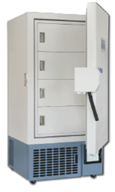

A -40 freezer, or deep freezer, is a type of freezer that can maintain temperatures as low as from -10 to -40 degrees Celsius . These freezers are commonly used in research, medical, and scientific settings for the long-term preservation of biological samples, reagents, and other temperature sensitive materials. The air cooled Single refrigeration system has been designed to maintain the set temperature in elevated ambient temperature environments. Dual cascade refrigeration system, with two, air-cooled compressors. CFC/HCFC-Free refrigerants., Washable condenser filter keeps fins dust-free, maintaining optimal cooling efficiency. Moulded, closed cell, CFC/HCFC-Free insulation. Heavy-gauge steel cabinet with high-impact powder coated exterior finish. Stainless Steel Interior. Rounded interior corners for easy cleaning. Provided with Access port. Low profile design. Controller Mounted at reachable level. Insulated Inner Doors. Heavy door hinges & adjustable stainless-steel shelves, creating adjustable interior compartments. Optionally Includes racks, boxes and dividers. These may be ordered separately, or as fullload sample inventory system. Optionally also available temperature recorders, LN2/LCO2 back-up systems, inventory components and associated products. RS232 or RS485 communication ports, optional software.